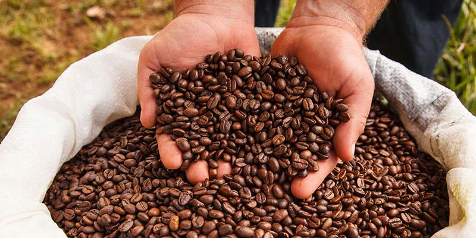

El café de especialidad como lo define la SCAA (Specialty Coffee Association of America) es café 100% Arábica que tiene un puntaje sobre 80 en una escala de 0-100 puntos.
Esta estricta escala es el resultado de un análisis sensorial del café en verde (oro), tostado, molido y preparado como bebida. Los cafés que alcanzan el estado Especialidad no tienen defectos, o tiene muy pocos de ellos, son generalmente cultivados en regiones especiales y remotas, con climas ideales, y son procesados de manera única, incluso muchos de ellos de manera artesanal, y presentan cualidades de taza de alta calidad.
Muy poco porcentaje del café que se cultiva alrededor del mundo alcanza el estado de Café de especialidad.
No se debe confundir con términos como "café gourmet" o "café premium", pues son términos de marketing que no tienen ningún estándar. No debemos inducir a creer que un Café de Especialidad es lo mismo que un café de alta calidad.

-Fin de la página-